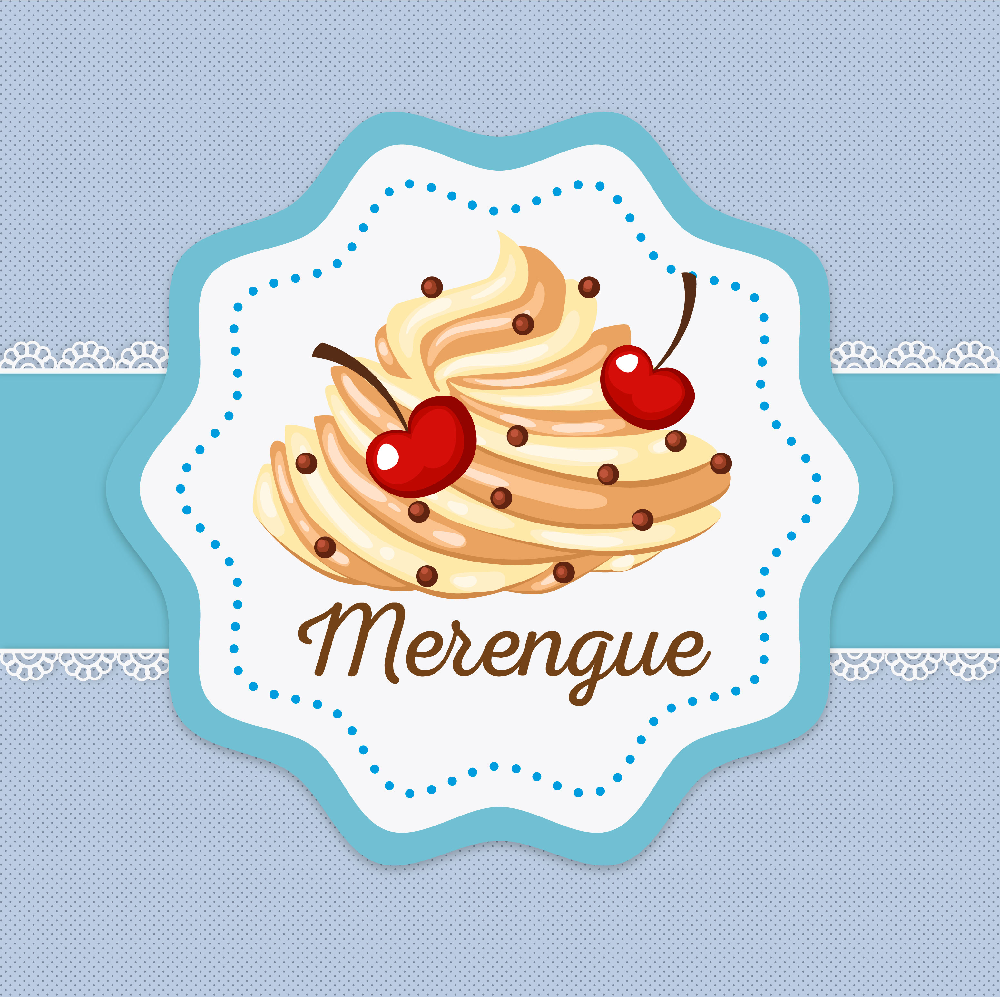

Aprendiendo a cocinar
Rol:
Desarrolladora y programadora
Fecha:
Noviembre 2017
Cliente:
Universidad Jorge Tadeo Lozano - Tecnología III
Resumen
Aprendiendo a Cocinar es una experiencia de realidad mixta, donde la realidad aumentada, la realidad virtual y el internet de las cosas conviven en un solo lugar para crearle una experiencia inolvidable al usuario. Esta experiencia tiene el objetivo de ayudarle a las personas que no saben cocinar a aprender ciertas habilidades en la cocina, sin la necesidad de desperdiciar comida, sin cortes innecesarios en las manos, ni generar grandes desastres dentro de la cocina.
Target
Aprendiendo a cocinar

Desarrollo, Realidad virtual
Se realizó el montaje del espacio donde se iba a desenvolver el usuario. Para este prototipo, nos enfocamos en la actividad de cortar una zanahoria. En este escenario, se realizó la conexión con Arduino, para que el usuario tuviera un feedback cada vez que hacia la acción de cortar algo en el mundo real y que este se viera reflejado en la escena de realidad virtual desarrollada.
herramientas

Unity

Vuforia
Arduino

Illustrator
Lenguajes

C#
Java
Equipo
Adriana Villalobos